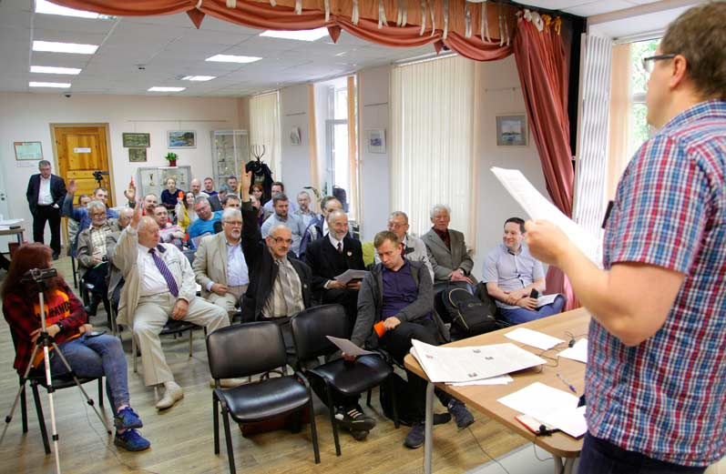

Постановление XXV съезда
Рабочей партии России
«Отчет ЦК РПР и задачи партии»

Обсудив отчетный доклад Центрального Комитета партии, с которым выступили сопредседатель рабочей комиссии ЦК РПР В.В. Кальвит, сопредседатель идеологической комиссии ЦК РПР Д.Ю. Шилов, сопредседатель организационной комиссии ЦК РПР К.А. Сенков и сопредседатель идеологической комиссии ЦК РПР М.В. Попов, Съезд отмечает, что за истекший период партия действовала в соответствии с планом работы для выполнения Программы РПР.
В октябре 2017 и марте/апреле 2018 года проведены семинары Федерации профсоюзов России и Фонда рабочей Академии — Российские комитеты рабочих. Особое внимание рабочими на РКР было уделено вопросам практического перехода к 6-часовому рабочему дню. На октябрьском семинаре были приняты постановления «Борьба за 6-часовой рабочий день», «Включение требования 6-часового рабочего дня в коллективные договоры и соглашения», «Организация коллективных действий». На заседании в марте/апреле приняты постановления «Борьба за сокращение рабочего дня до 6 часов», «Борьба профсоюзов за создание условий труда, сохраняющих жизнь и здоровье работниц и работников», «Борьба за повышение заработной платы до стоимости рабочей силы» и «Проблема орабочения профсоюзов». Перед осенним РКР была проведена Международная научно-практическая конференция «Участие профсоюзов в создании и деятельности Советов», по результатам которой был выпущен сборник статей.
В августе 2017 года проведена научно-практическая конференция «Великая Советская Революция: истоки и уроки», по результатам которой был выпущен сборник материалов. В апреле 2018 года проведена XII Международная научно-практическая конференция «Ленин в современном мире». Изданы брошюры М.В. Попова «Экономическая борьба» и «Экономическая и политическая борьба». Выпущено издание «Науки Логики», под редакцией М.В. Попова. Выпущены газеты «Правда труда» (№33), «Народная правда» (№157, №158), «За рабочее дело» (спецвыпуск «Московский рабочий» №203, №202, №204, №205).
Ведутся регулярные занятия в Университете рабочих корреспондентов, кружках изучения «Науки Логики» в Ленинграде и Нижнем Новгороде, кружке изучения «Капитала», завершен шестой год обучения слушателей в Красном Университете Фонда Рабочей Академии. В связи со значительным ростом численности членов Партии открыты и поддерживаются региональные группы в сети ВКонтакте Омска, Северного Кавказа, Новосибирска, Пскова, Оренбурга, Самары, Москвы. Активно развивается сайт московского регионального отделения Фонда Рабочей Академии.
Партия ведет четыре сайта: Фонда рабочей Академии, Московского отделения ФРА, Северо-Кавказского отделения РПР, Рабочей партии России, а также канал ФРА на youtube и Рабочее ТВ.
Отмечая значительные достижения партии в идеологической работе, Съезд в то же время констатирует недопустимость подмены соединения социализма с рабочим движением главным образом идеологической деятельностью, обучением и самообразованием. РПР программную задачу организатора рабочего движения России пока должным образом не выполняет.
Съезд удовлетворительно оценивает работу партии за отчётный период и постановляет следующее.
1. Членам партии участвовать в создании и работе профсоюзных организаций в первую очередь путем работы над проектами прогрессивных коллективных договоров.
2. Членам партии рассматривать задачи практического перехода к 6-часовому рабочему дню и сокращения продолжительности трудового стажа с целью увеличения продолжительности жизни трудящихся как наиболее важные для текущего момента.
3. В связи с тем, что указанный переход может быть осуществлен только путем ведения коллективных действий на заводах и фабриках, обязать членов партии изучить Трудовой кодекс России и материалы по разрешению коллективных трудовых споров и организации забастовок, имеющиеся на канале Фонда Рабочей Академии, чтобы консультировать трудящихся по вопросам трудовых прав и предусмотренным законом процедурам проведения трудовых коллективных споров.
4. Обязать всех членов партии, за исключением преподавателей, пройти обучение в Красном Университете.
5. Обязать членов партии создавать партийные организации путем привлечения в РПР рабочих в своих регионах.
6. Рекомендовать всем членам партии работать в качестве корреспондентов в партийных средствах массовой информации.
Выполнение указанных задач является залогом восстановления Советской власти в России. Съезд призывает рабочих и всех сторонников рабочего класса вступать в Рабочую партию России!
Ленинград, Разлив,
июнь 2018
|